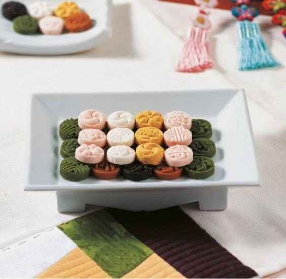

Dasik
$200 x Paquete
$50 x Unidad
Este es muy tradicional en Corea, pues se suele acompañar de té coreano a base de frutas dulces, hojas y hasta especias. Sus principales ingredientes son: la harina de cereal, miel, azúcar, fruta y yeot.
Lo que hace lindo a este postre son sus patrones que se marcan con un dasikpan (다식판) (sellos decorativos). Además, los dasik también vienen en diferentes colores como blanco, amarillo, negro, verde o marrón.